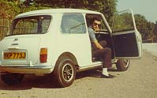

Fariborz (Fred) Eshragh
We were classmates in Alborz high school. He left Iran for UK in 1971 and after a while we lost contact. As soon as I was on the Internet in 1992, I started searching for him and finally in 1999 I spotted him in Vancouver, Canada. Here are some pictures of him.
Tochal Summit (3750 m), near Tehran.
1970

On of the two pictures he sent me when he was in the UK. 1972.
Fred Eshragh, PhD. Vancouver, 2000.